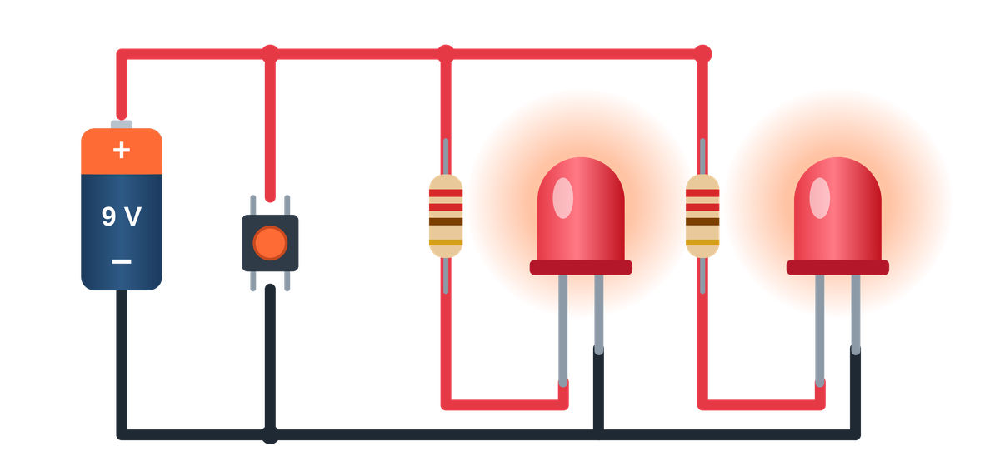
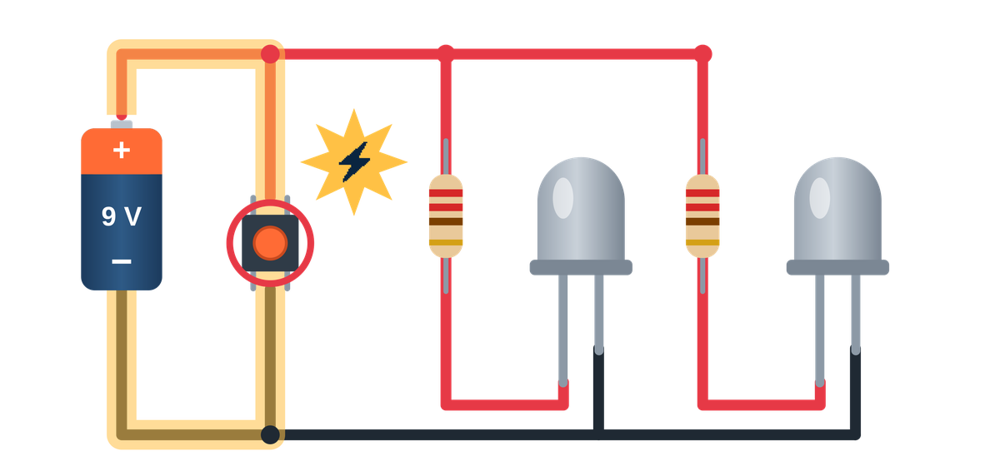
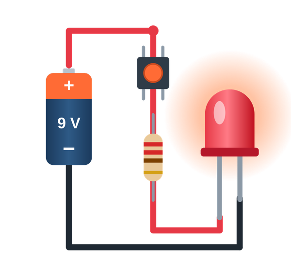
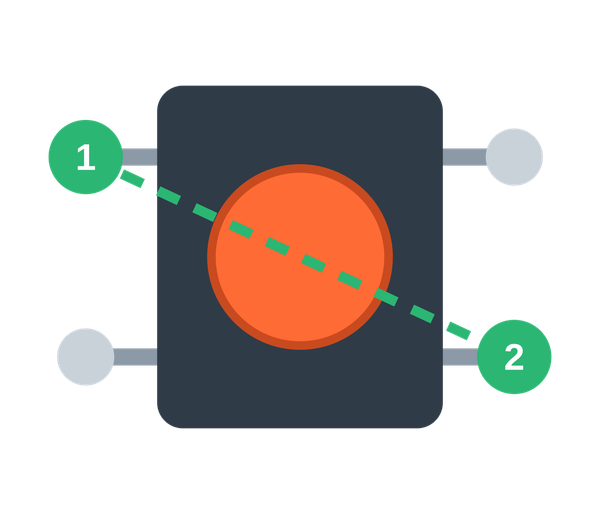
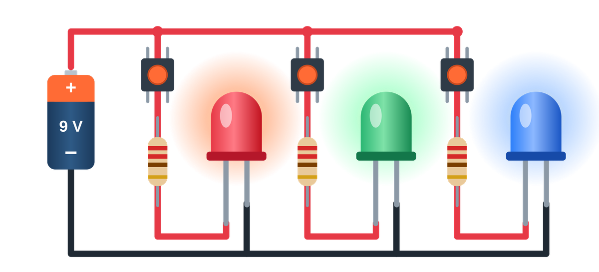

1Le problème

Je n'appuie pas : les LED sont allumées.

J'appuie : tout s'éteint !
2Pourquoi ?
Le bouton est relié directement au + et au − de la pile. Quand j'appuie, le courant passe par le bouton. Il ne passe plus par les LED. C'est un court-circuit.
💧
Pour comprendre : le courant est comme l'eau. Il prend toujours le chemin le plus facile.
3La règle
Le bouton se met dans le chemin de la LED. Jamais directement entre le + et le −.
+ de la pile→bouton→résistance→LED→− de la pile
4Je corrige, étape par étape
- 1J'arrête la simulation.
- 2Je supprime les fils du bouton.
- 3Je relie le + de la pile à une patte du bouton.
- 4Je relie la patte en diagonale à la résistance.
- 5Je relie la résistance à la patte longue de la LED.
- 6Je relie la patte courte de la LED au − de la pile.
- 7Je teste : j'appuie, la LED s'allume.


Astuce : je relie 2 pattes du bouton en diagonale.
5Je fais les 3 chemins

Je refais les étapes 3 à 7 pour la LED verte, puis pour la LED bleue.
✓Je vérifie
🎉 Bravo ! Tu as corrigé le court-circuit.

📖 Lexique français → عربية
| La pile | العمود الكهربائي |
| Le + / le − de la pile | القطب الموجب / القطب السالب |
| La LED | الصمام الثنائي الباعث للضوء |
| La patte longue / courte | الرجل الطويلة / القصيرة |
| La résistance | المقاومة (الموصل الأومي) |
| Le bouton-poussoir | الزر الضاغط |
| Le fil | السلك الموصل |
| Circuit fermé / ouvert | دارة مغلقة / مفتوحة |
| En série | على التوالي |
| En dérivation | على التوازي |
| Le court-circuit | الدارة القصيرة |